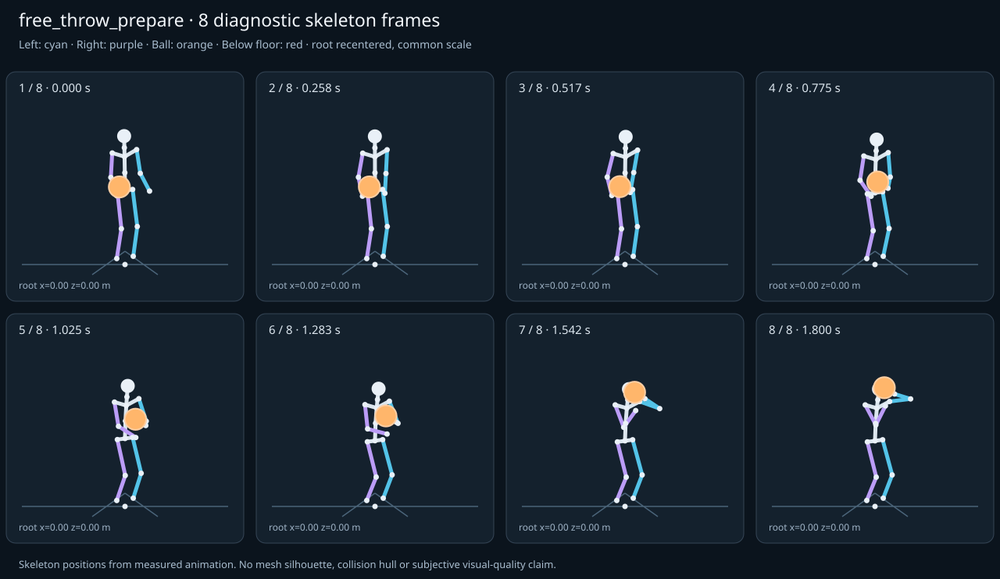

כל הקליפים · תצוגת התנועה · JSON מקורי
ציון 91.4 · כיסוי 100%
נתוני motion-qa-v1 המקוריים; עיצוב הדוח בלבד הותאם לחבילה. נקודות הסוליה נמדדות בתרחיש שחקן חיצוני מוצהר; Root בנכס נשאר קבוע.

| מדד | מצב | ערך | ציון | ראיות |
|---|---|---|---|---|
| החלקת רגליים | ירוק | 0.000001 | 100 | ראיות המדידה{
"coordinateSpace": "native GLB plus explicitly declared external actor position and heading, applied once",
"supportSource": "declared",
"windows": 2,
"samples": 434,
"maxDriftMeters": 0.000002,
"p95SpeedMetersPerSecond": 0.00014,
"worst": {
"bone": "LeftFoot",
"t": 0.883333,
"start": 0,
"end": 1.8,
"driftMeters": 0.000002
}
} |
| חדירה לרצפה | ירוק | 0.000019 | 99.92 | ראיות המדידה{
"samples": 4340,
"floorY": 0,
"probeKind": "declared sole probes plus skeletal joint centers (no mesh surfaces)",
"maxDepthMeters": 0.000033,
"worst": {
"t": 0.816667,
"bone": "LeftFoot",
"depthMeters": 0.000033,
"y": -0.000033
}
} |
| קפיצות פוזה | ירוק | 0.744849 | 85.1 | ראיות המדידה{
"adjacentPairs": 216,
"observations": 3672,
"maxDegrees60Hz": 11.172739,
"maxMarkerStepHeight60Hz": 0.016951,
"maxRootStepHeight60Hz": 0,
"worst": {
"ratio": 0.7448492396394073,
"t": 0.175,
"previousTime": 0.166667,
"bone": "LeftHand",
"markerStepHeight60Hz": 0.01371,
"degrees60Hz": 11.172739
}
} |
| חריגות אנטומיות | ירוק | 0 | 100 | ראיות המדידה{
"testedFrames": 217,
"affectedFrames": 0,
"checks": 3689,
"maxLimbFlexionDegrees": 123.905163,
"maxRelativeSegmentLengthChange": 0,
"hingeDirectionChecked": true,
"axialTwistChecked": false,
"violations": []
} |
| מגע בכדור | ירוק | 0.000566 | 99.25 | ראיות המדידה{
"radiusMeters": 0.12,
"samples": 290,
"missed": [],
"contacts": [
{
"t": 1.583333,
"bone": "RightHand",
"gapMeters": 0.000956,
"signedGapMeters": 0.000956,
"centerDistanceMeters": 0.120956,
"contactPoint": [
-0.032515,
1.254689,
0.268758
],
"ballCenter": [
-0.032632,
1.375645,
0.268647
],
"declaredLocalPoint": true
},
{
"t": 1.616667,
"bone": "RightHand",
"gapMeters": 0.00089,
"signedGapMeters": 0.00089,
"centerDistanceMeters": 0.12089,
"contactPoint": [
-0.033949,
1.269261,
0.269463
],
"ballCenter": [
-0.034043,
1.390151,
0.269453
],
"declaredLocalPoint": true
},
{
"t": 1.25,
"bone": "RightHand",
"gapMeters": 0.000886,
"signedGapMeters": -0.000886,
"centerDistanceMeters": 0.119114,
"contactPoint": [
-0.001579,
0.937052,
0.251086
],
"ballCenter": [
-0.001572,
1.056166,
0.250898
],
"declaredLocalPoint": true
},
{
"t": 1.283333,
"bone": "RightHand",
"gapMeters": 0.000881,
"signedGapMeters": -0.000881,
"centerDistanceMeters": 0.119119,
"contactPoint": [
-0.003287,
0.955329,
0.252231
],
"ballCenter": [
-0.003349,
1.074448,
0.251914
],
"declaredLocalPoint": true
},
{
"t": 1.55,
"bone": "RightHand",
"gapMeters": 0.000871,
"signedGapMeters": 0.000871,
"centerDistanceMeters": 0.120871,
"contactPoint": [
-0.030339,
1.232717,
0.26769
],
"ballCenter": [
-0.030488,
1.353588,
0.267422
],
"declaredLocalPoint": true
},
{
"t": 1.316667,
"bone": "RightHand",
"gapMeters": 0.000804,
"signedGapMeters": -0.000804,
"centerDistanceMeters": 0.119196,
"contactPoint": [
-0.005699,
0.980966,
0.253809
],
"ballCenter": [
-0.005849,
1.10016,
0.253342
],
"declaredLocalPoint": true
},
{
"t": 1.216667,
"bone": "RightHand",
"gapMeters": 0.00077,
"signedGapMeters": -0.00077,
"centerDistanceMeters": 0.11923,
"contactPoint": [
-0.000558,
0.926072,
0.250392
],
"ballCenter": [
-0.000515,
1.045302,
0.250295
],
"declaredLocalPoint": true
},
{
"t": 1.575,
"bone": "RightHand",
"gapMeters": 0.000717,
"signedGapMeters": 0.000717,
"centerDistanceMeters": 0.120717,
"contactPoint": [
-0.032077,
1.250119,
0.268463
],
"ballCenter": [
-0.032165,
1.370836,
0.26838
],
"declaredLocalPoint": true
},
{
"t": 1.591667,
"bone": "RightHand",
"gapMeters": 0.000716,
"signedGapMeters": 0.000716,
"centerDistanceMeters": 0.120716,
"contactPoint": [
-0.032966,
1.259261,
0.268971
],
"ballCenter": [
-0.033053,
1.379977,
0.268888
],
"declaredLocalPoint": true
},
{
"t": 1.35,
"bone": "RightHand",
"gapMeters": 0.000685,
"signedGapMeters": -0.000685,
"centerDistanceMeters": 0.119315,
"contactPoint": [
-0.00875,
1.013104,
0.255749
],
"ballCenter": [
-0.008985,
1.132417,
0.255134
],
"declaredLocalPoint": true
},
{
"t": 1.608333,
"bone": "RightHand",
"gapMeters": 0.000676,
"signedGapMeters": 0.000676,
"centerDistanceMeters": 0.120676,
"contactPoint": [
-0.033687,
1.266546,
0.269297
],
"ballCenter": [
-0.033758,
1.387222,
0.26929
],
"declaredLocalPoint": true
},
{
"t": 1.258333,
"bone": "RightHand",
"gapMeters": 0.000669,
"signedGapMeters": -0.000669,
"centerDistanceMeters": 0.119331,
"contactPoint": [
-0.001953,
0.940692,
0.251254
],
"ballCenter": [
-0.001947,
1.060023,
0.251112
],
"declaredLocalPoint": true
},
{
"t": 1.65,
"bone": "RightHand",
"gapMeters": 0.000668,
"signedGapMeters": 0.000668,
"centerDistanceMeters": 0.120668,
"contactPoint": [
-0.034706,
1.276983,
0.269843
],
"ballCenter": [
-0.034772,
1.397651,
0.269869
],
"declaredLocalPoint": true
},
{
"t": 1.275,
"bone": "RightHand",
"gapMeters": 0.000663,
"signedGapMeters": -0.000663,
"centerDistanceMeters": 0.119337,
"contactPoint": [
-0.002789,
0.949827,
0.251858
],
"ballCenter": [
-0.002835,
1.069164,
0.25162
],
"declaredLocalPoint": true
},
{
"t": 1.241667,
"bone": "RightHand",
"gapMeters": 0.00066,
"signedGapMeters": -0.00066,
"centerDistanceMeters": 0.11934,
"contactPoint": [
-0.001247,
0.933437,
0.250851
],
"ballCenter": [
-0.001242,
1.052778,
0.25071
],
"declaredLocalPoint": true
},
{
"t": 1.291667,
"bone": "RightHand",
"gapMeters": 0.000659,
"signedGapMeters": -0.000659,
"centerDistanceMeters": 0.119341,
"contactPoint": [
-0.003861,
0.960859,
0.252471
],
"ballCenter": [
-0.003908,
1.0802,
0.252233
],
"declaredLocalPoint": true
},
{
"t": 1.558333,
"bone": "RightHand",
"gapMeters": 0.000658,
"signedGapMeters": 0.000658,
"centerDistanceMeters": 0.120658,
"contactPoint": [
-0.03098,
1.239142,
0.267967
],
"ballCenter": [
-0.031092,
1.3598,
0.267767
],
"declaredLocalPoint": true
},
{
"t": 1.625,
"bone": "RightHand",
"gapMeters": 0.000658,
"signedGapMeters": 0.000658,
"centerDistanceMeters": 0.120658,
"contactPoint": [
-0.034215,
1.271978,
0.269599
],
"ballCenter": [
-0.034284,
1.392637,
0.269591
],
"declaredLocalPoint": true
},
{
"t": 1.541667,
"bone": "RightHand",
"gapMeters": 0.000648,
"signedGapMeters": 0.000648,
"centerDistanceMeters": 0.120648,
"contactPoint": [
-0.029729,
1.226282,
0.267254
],
"ballCenter": [
-0.02984,
1.346929,
0.267052
],
"declaredLocalPoint": true
},
{
"t": 1.516667,
"bone": "RightHand",
"gapMeters": 0.000647,
"signedGapMeters": 0.000647,
"centerDistanceMeters": 0.120647,
"contactPoint": [
-0.027458,
1.203798,
0.266255
],
"ballCenter": [
-0.027654,
1.324444,
0.265802
],
"declaredLocalPoint": true
}
],
"contactDetailsTruncated": true,
"coordinateSpace": "native GLB plus explicitly declared external actor position and heading, applied once"
} |
| כניסה ויציאה מול המתנה | אדום | 3.14209 | 48.82 | ראיות המדידה{
"entry": {
"ratio": 0.013841129776494036,
"t": 0,
"idleTime": 3.816667,
"markers": 17,
"rmsPositionHeight": 0.000553,
"rmsRotationDegrees": 0.106557,
"rmsVelocityHeightPerSecond": 0.010381,
"velocityEvaluated": true
},
"exit": {
"ratio": 3.142089658370393,
"t": 1.8,
"idleTime": 3.533333,
"markers": 17,
"rmsPositionHeight": 0.125684,
"rmsRotationDegrees": 73.653226,
"rmsVelocityHeightPerSecond": 0.003048,
"velocityEvaluated": true
},
"worstEndpoint": "exit",
"alignment": "horizontal root translation; raw asset poses used when provided"
} |
| מהירות גוף מול צעדים | לא חל | — | — | ראיות המדידה{} |
| סימטריה | ירוק | 0 | 100 | ראיות המדידה{
"mode": "structural",
"modeSource": "declared",
"structuralMismatch": 0,
"segments": [
{
"segment": "Arm-ForeArm",
"mismatch": 0
},
{
"segment": "ForeArm-Hand",
"mismatch": 0
},
{
"segment": "UpLeg-Leg",
"mismatch": 0
},
{
"segment": "Leg-Foot",
"mismatch": 0
}
],
"motionRmsHeight": null,
"worstMotion": null,
"bilateralPoseRmsHeightUnscored": 0.066895,
"note": "One-sided authored actions are checked for structural symmetry only."
} |